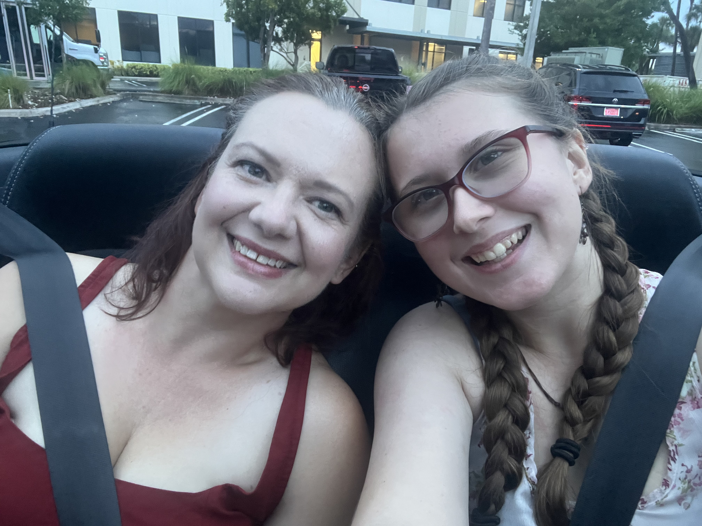
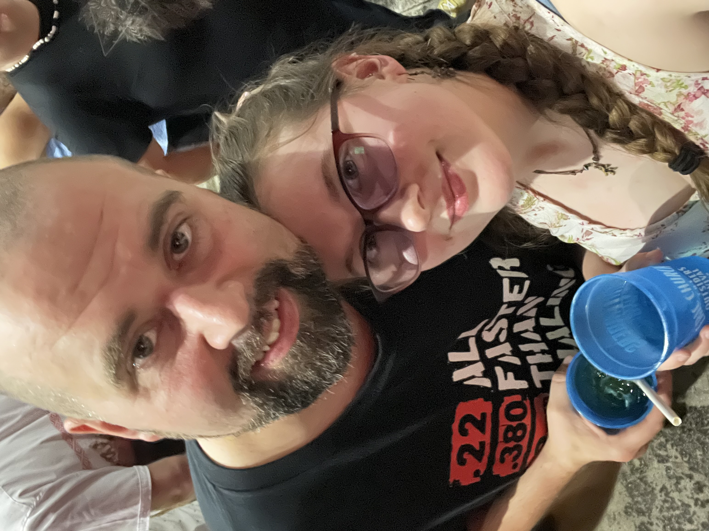
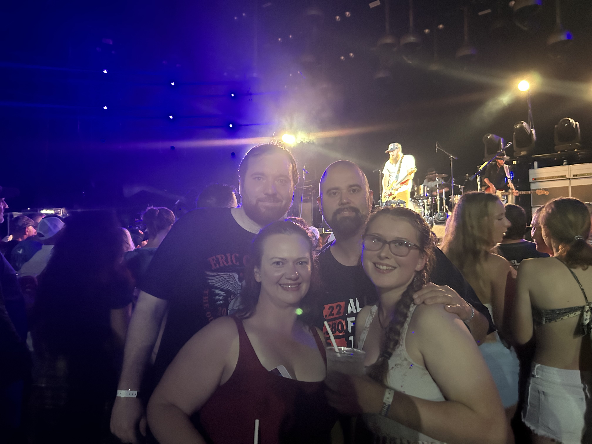

I'm someone who places immense value on personal connections and meaningful relationships. This is reflected in my strong bond with my family. Being close to my loved ones is not just a priority for me, but a source of great strength. It aligns perfectly with my Relator strength, which thrives on building and nurturing deep connections with others. These close relationships with my family members provide a solid foundation of trust, support, and understanding in my life, and I cherish every moment we spend together.
 One of my greatest joys in life is attending concerts. There's something incredibly special about the energy and connection that live music brings. Whether it's a small intimate venue or a massive stadium show, I find myself completely immersed in the experience, cherishing every note and beat.
Another passion of mine is exploring the exhilarating world of theme parks. The combination of thrilling rides, immersive environments, and the sheer joy of letting go and having fun is a source of endless excitement for me. Each visit feels like an adventure waiting to unfold.
Beyond these adventures, nothing brings me greater happiness than spending quality time with my friends and family. Whether we're sharing laughs over a home-cooked meal or embarking on a spontaneous road trip, those moments of togetherness are the ones I hold most dear. It's in these shared experiences that I truly feel alive and connected to the people who matter most in my life.